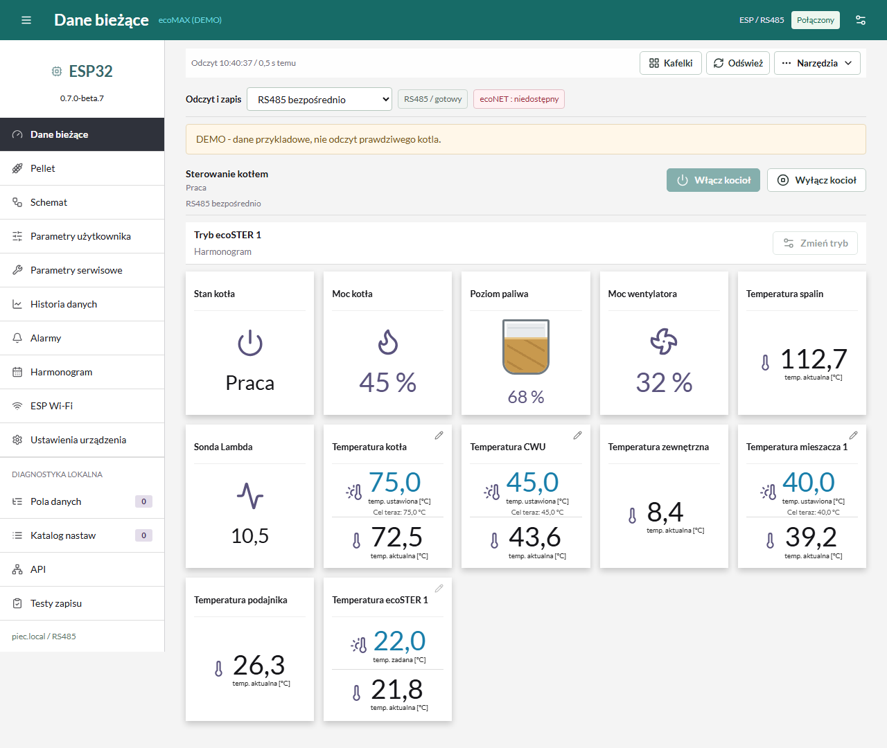
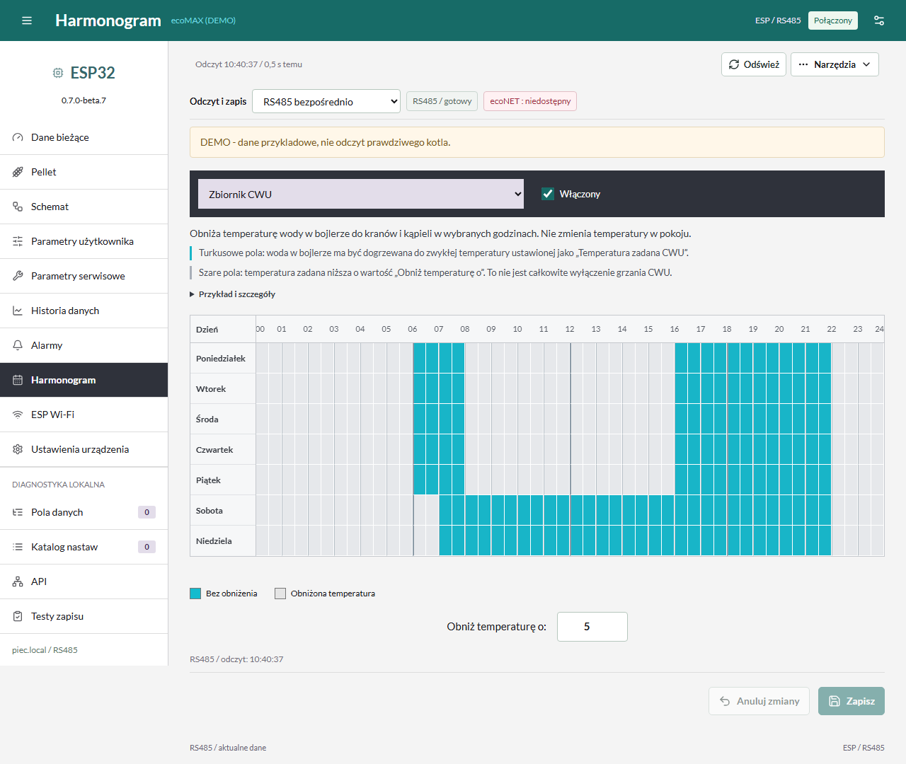
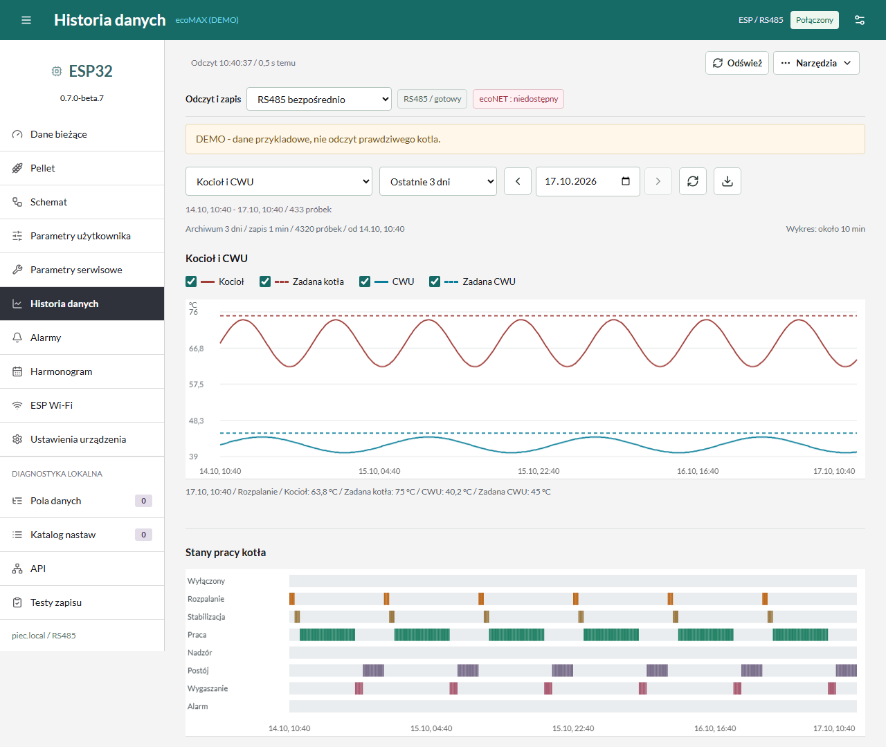
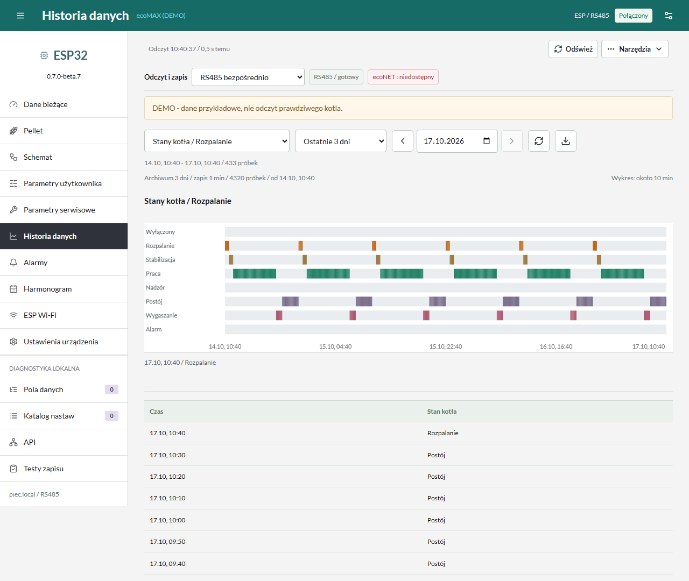
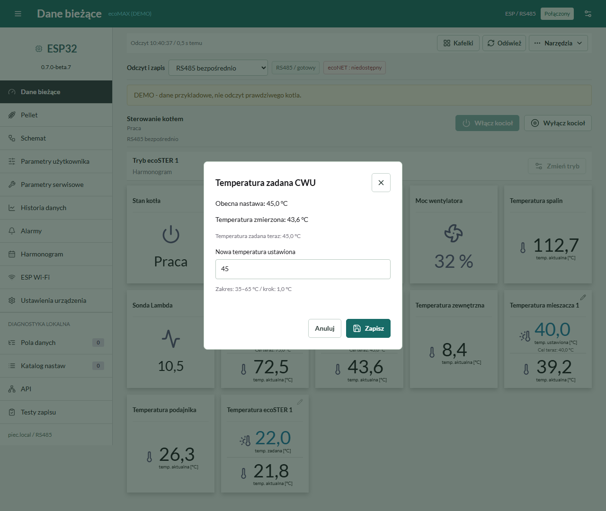
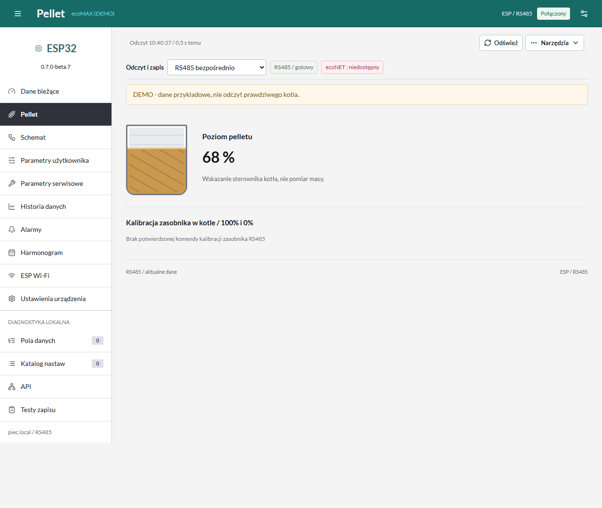
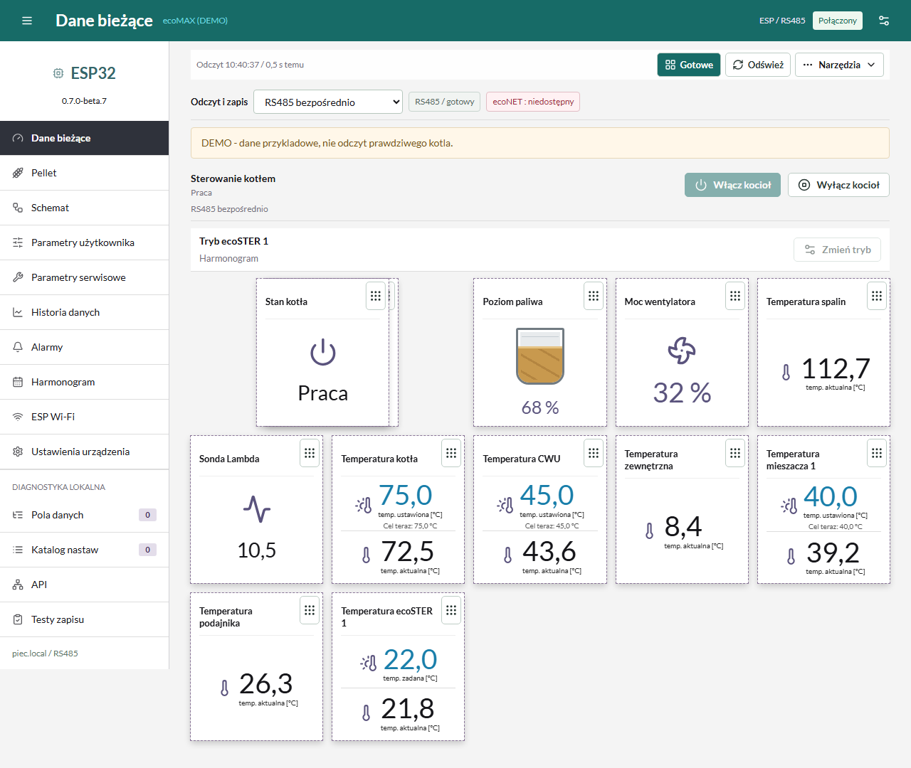
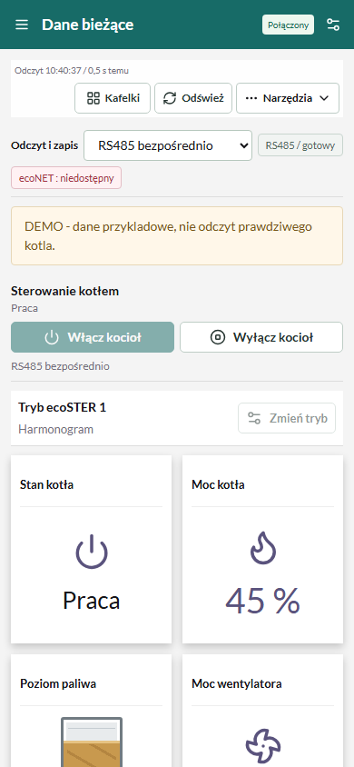
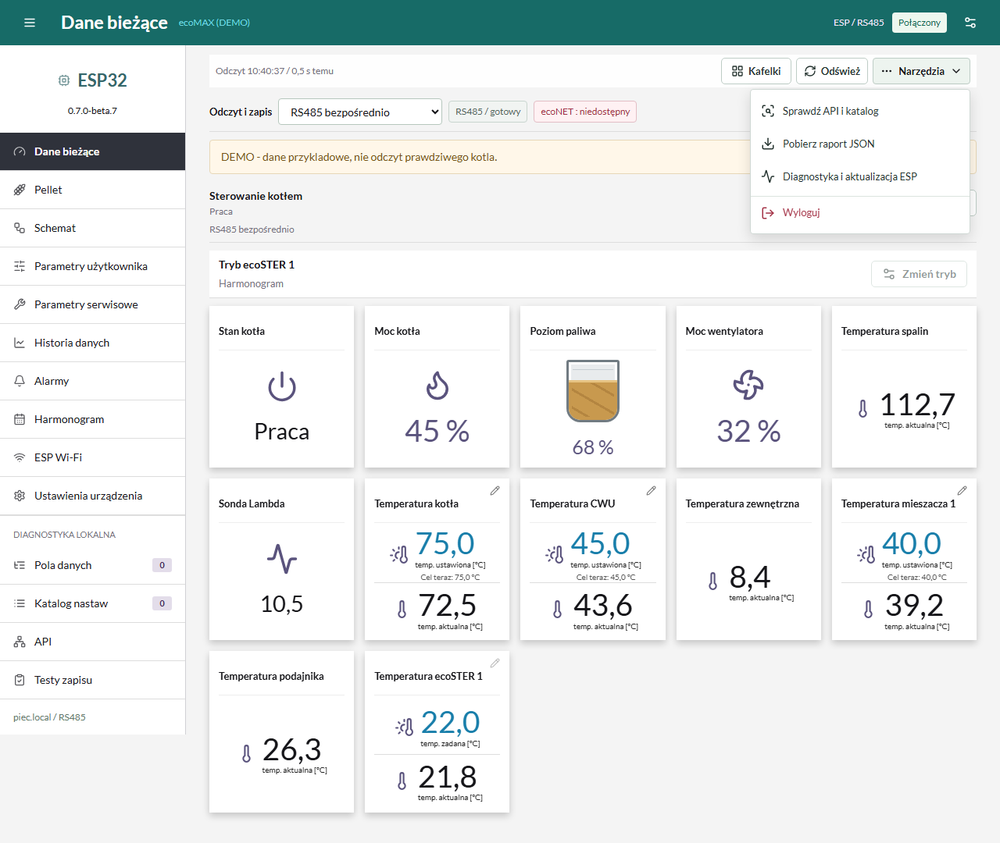

Jak Wyglada Panel ecoMAX Wi-Fi
Zrzuty rzeczywistego interfejsu wersji 0.7.0-beta.7, uruchomionego lokalnie z danymi przykladowymi (DEMO). Nie jest to potwierdzenie obslugi kazdej nastawy w dowolnym kotle. Kliknij zdjecie, aby je powiekszyc w GitHubie.
Odczyty I Temperatury
Stan kotla, temperatury zmierzone i zadane, pokoj, mieszacz oraz poziom paliwa, jezeli regulator udostepnia te dane.

Harmonogram Tygodniowy
Dni od poniedzialku do niedzieli, godziny 00-24 i kratki po 30 minut. Przy wybranym harmonogramie widac opis jego dzialania.

Historia Temperatur
Wykresy temperatur i nastaw, wybor zakresu do 3 dni, stany pracy i CSV. Pokazane przebiegi sa wygenerowanym przykladem.

Rozpalanie I Stany Kotla
Osobny widok stanow: m.in. rozpalanie, stabilizacja, praca i wygaszanie.

Zmiana Nastawy
Przykladowe okno zadanej temperatury CWU: wartosc zmierzona, obecna nastawa, dopuszczalny zakres i zapis. Podczas robienia zdjecia nie wysylano polecenia do zadnego kotla.

Poziom Pelletu
Graficzny zasobnik z procentami z kotla. Brak danych nie oznacza 0%.

Wlasna Kolejnosc Kafelkow
Przycisk edycji ukladu, przeciaganie myszka lub dotykiem i przywracanie domyslnej kolejnosci. Kazda przegladarka zapamietuje wlasny uklad.

Panel Na Telefonie
Ten sam panel na ekranie telefonu; menu boczne jest zwijane.

Narzedzia Panelu
Podpisane przyciski Kafelki i Odswiez oraz menu z nazwami pozostalych funkcji. Wyloguj jest ostatnia pozycja, oddzielona od narzedzi.

Instalacja I Sprzet
Oba modele Waveshare ESP32-S3-RS485-CAN i ESP32-S3-RS485-CAN-U (antena zewnetrzna) uzywaja tego samego firmware, 16 MB flash / 8 MB PSRAM. Zobacz instrukcje ze zdjeciami i schematem, zgodnosc i ograniczenia oraz instalator USB.